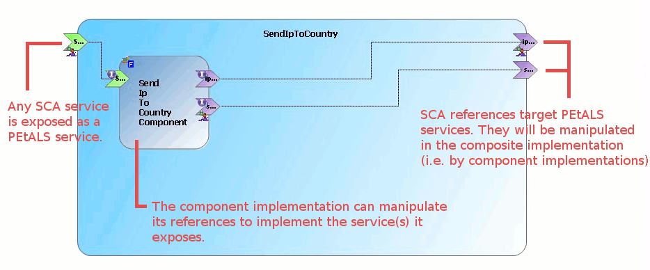

That may be the first question to go through your mind. What is the interest of running SCA applications inside Petals?
In fact, there are several points of view. The two main ones are about a usual
SCA user and a usual Petals user.
In the scope of this document, we will limit
our explanation to the second case since this is the main user target for instance.
So, what can SCA bring to a Petals user?
Well, the Petals SCA component should be seen as a powerful alternative to the BPEL and EIP components.
An SCA application, once deployed into Petals, exposes its services as Petals services (i.e. they are accessible as JBI end-points). Such an application can also easily call other Petals services at runtime. This is achieved by the reference mechanism of SCA. Or said differently, it means the composite references target Petals services. Thus, you can easily manipulate them in the composite implementation. With a Java implementation, you can call a Petals service as a Java method, check conditions on call results with the "if... else..." syntax and so on...
In Petals, SCA services and references are either Petals services or point to Petals services. Thus, you can combine SCA capabilities with Petals features, reinforce loosely-coupling (e.g. with routing strategies) or combine SCA with service registries. You could also imagine calling an SCA service within a BPEL orchestration or with any other Petals component. The integration of an SCA application inside Petals is transparent for the bus. You can then use it as any other Petals service. The difference is inside the component and in the way you create your service.
The contrast with the BPEL and EIP components is quite obvious at first glance. With these two components, it is all about XML: the assembly itself is an XML document, conditions are defined with XPath, transformations must be made using XSL style sheets within the XSLT component... With SCA, you do all of this with the implementation language used in your SCA application, e.g. Java. Besides, you are not limited to pre-defined patterns. This freedom is enjoyable but also implies some discipline to avoid messy applications. It is up to you to decide when you should use SCA, BPEL or EIP in Petals.
Some may also think about using the SCA component as an alternative to the POJO and JSR-181 components. Although it is indeed possible (it consists in creating an SCA application with no reference), we do not recommend to proceed this way. At least, for the moment. However, this Petals component being very young, feel free to experiment it and bring feedback to the Petals community.
Running an SCA application within Petals requires your application to respect some constraints.
For some of them, it is due to the SCA component youth. In which case they should disappear later on.
Here are these constraints: